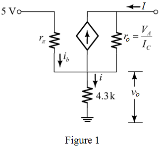

Calculate the value of .
Calculate the value of  .
.
Refer to Figure P7.63 in the textbook for the constant-current source circuit.
Small signal equivalent circuit of the circuit diagram is shown in Figure 1.

Calculate the emitter current.
Since, .
Therefore, the collector current is, .
Calculate the trans-conductance.
Calculate the value of .
Calculate the value of .
Write the expression for the output resistance.
Substitute for  , for , for
, for , for  , and
, and  for .
for .
Therefore, the output resistance is, .
Calculate the change in collector current if the collector voltage changes by 10 V.
Therefore, the change in collector current is, .